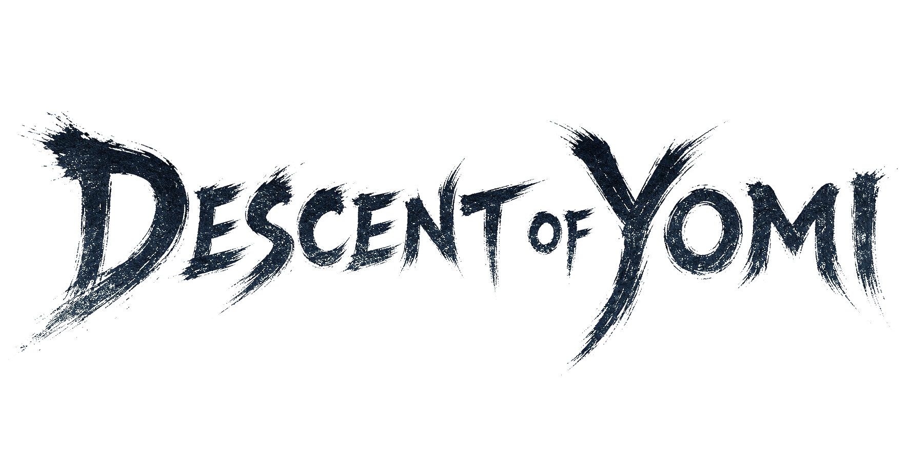

Press Kit — Descent of Yomi
メディアキットPress Kit
『Descent of Yomi ― 黄泉降り』を取り上げてくださる配信者・メディアの方へ。ロゴ、キーアート、スクリーンショット、トレーラー、妖怪立ち絵を許諾なしで自由にお使いいただけます。 For streamers and press covering Descent of Yomi. Logos, key art, screenshots, the trailer and character art — all free to use, no permission required.
配信・動画・記事についてのお願いStreaming, video and coverage policy
収益化を含め、実況・配信・動画投稿は自由に行っていただけます。 事前のご連絡も許諾も不要です。プラットフォームも問いません。 Monetised video and streaming is permitted. No permission and no prior notice are needed, on any platform.
ネタバレの範囲もすべてお任せします。伏せていただきたい箇所はありません。辛口な評価も歓迎します。率直なご感想をお願いします。 Spoilers are entirely at your discretion — nothing is embargoed. Critical coverage is welcome; please say what you actually think.
お願いは2点だけです。ロゴの加工・色変更はご遠慮ください。また、本作が特定の商品や主張を推奨しているかのような使い方もお控えください。 Only two requests: please don't edit or recolour the logo, and please don't present the game as endorsing something it doesn't.
Download
まとめてダウンロードDownload everything
ロゴ、アイコン、キーアート、スクリーンショット8枚、妖怪立ち絵8点、札のアート6点と紹介文が入っています。トレーラーは容量が大きいため別リンクです。 Logos, icons, key art, eight screenshots, eight yokai illustrations, six card artworks and the written descriptions. The trailer is a separate link because of its size.
ここに無い素材(別のカット、高解像度の原寸、告知用の素材など)が必要でしたら reach.app.support@gmail.com までお気軽にご連絡ください。 Need something that isn't here — a different capture, a larger original, or artwork for an announcement? Email reach.app.support@gmail.com.
Fact Sheet
基本情報Fact sheet
| タイトルTitle | Descent of Yomi ― 黄泉降りDescent of Yomi (JP title: 黄泉降り) |
|---|---|
| 開発・販売Developer & Publisher | R-each(個人ゲーム開発者)R-each — a solo game developer |
| ジャンルGenre | 和風ローグライク・デッキ構築バトルJapanese-folklore roguelike deckbuilder |
| プラットフォームPlatforms | Steam (Windows 10/11 64bit) / iOS・iPadOS 13.0以降Steam (Windows 10/11 64-bit) / iOS & iPadOS 13.0+ |
| 価格Price | Steam版 ¥655(買い切り) / iOS版 無料 ― アプリ内課金「製品版購入」¥600で全編プレイ可能Steam ¥655 (one-time) / iOS free — “Full Version” IAP ¥600 unlocks the whole game |
| 体験版Demo | あり(Steamストアページより無料)Yes — free on the Steam store page |
| 配信日Release | Steam版 2026年7月27日 / iOS版 2026年7月Steam: 27 July 2026 / iOS: July 2026 |
| 対応言語Languages | 日本語 / 英語(全文)Japanese / English (full text) |
| モードModes | シングルプレイ / オンライン対戦Single-player / Online PvP |
| ボリュームContent | 妖怪87体 / 札198種 / 神器193種 / 出自7種 / 実績13種87 yokai / 198 cards / 193 artifacts / 7 origins / 13 achievements |
| レーティングAge rating | App Store 9+(ファンタジー暴力・恐怖表現を含みます)App Store 9+ (fantasy violence and horror themes) |
| Steam | store.steampowered.com/app/4785610 |
| App Store | apps.apple.com/jp/app/descent-of-yomi |
| 連絡先Contact | reach.app.support@gmail.com |
Copy
紹介文(そのままお使いください)Descriptions — copy and paste
一行
和の妖と墨の世界を舞台に、気力を読み、崩し、致命を刺す——死ぬたびに強くなるローグライク・デッキ構築カードゲーム。
短文
死者の国「黄泉」の最奥に、封じられし元凶あり。あなたは魂を賭して、その底へと降りていく。勝敗を決めるのは体力ではなく気力。攻めれば守りが薄れ、守れば決め手を失う。相手の一手を読んで弾き、気力が崩れた瞬間に致命の一撃を叩き込め。斃れても、刻を戻して、もう一度。
長文
『黄泉降り』は、潜るたびに姿を変える地下世界をひたすら深く降りていくローグライク・デッキ構築カードゲームです。札と神器を集めて己だけの山札を編み、行く手を阻む親玉妖怪を斬り伏せ、死者の国の最下層を目指します。 戦いの核は気力です。気力が残っている限り身体は斬られにくく、しかし札を切るたびに気力は削れていきます。相手の手を読み、弾きでいなし、気力が崩れた刹那に致命を打ち込む——甘えは即座に死を招きます。 道中の「禍つ場」には禁忌の札が眠ります。呪詛札はどんな戦況もひっくり返す力を持ちますが、一度切れば二度と完全な人間には戻れません。魂に呪いを重ねて生き延びるか、穢れずに死ぬか。その選択が旅の結末を変えます。 グラフィック、音楽、シナリオ、英語ローカライズ、バランス調整まですべて一人の開発者が制作しました。
One line
A Japanese-folklore roguelike deckbuilder with soulslike tension — read your foe's stamina, break their guard, and turn back time when you fall.
Short
Descent of Yomi is a roguelike deckbuilding card game set in the Japanese underworld. Stamina, not hit points, decides every duel: press the attack and your guard thins, hold back and you lose your edge. Parry, break the enemy's stamina, and drive the critical blow home before they do.
Long
Descent of Yomi is a roguelike deckbuilding card game about descending, ever deeper, through an underworld that reshapes itself with every run. Gather cards and relics, hone your deck, cut down the boss yokai that bar your way, and reach the deepest floor of the land of the dead. Stamina is the heart of every duel. While your stamina holds, your body is hard to cut — yet every card you play burns stamina too. Read the enemy's moves, turn them aside with Parry, and the instant their stamina breaks, strike for the kill. At the cursed Magatsu sites along the way, forbidden cards lie sleeping. Curse cards hold power enough to overturn any battle — but play one, and you can never be fully human again. Stack curses upon your soul to survive, or die untainted. That choice shapes how your journey ends. The programming, artwork, music, writing, English localisation and balance were all made by a single developer.
Trailer
トレーラーTrailer
1920×1080 / 60fps / 39秒。日本語版と英語版があります。動画・サムネイル・記事への引用は自由です。 1920×1080, 60 fps, 39 seconds, in Japanese and English. Free to use in videos, thumbnails and articles.
Logo & Icon
ロゴとアイコンLogo and icon
白抜き版は暗い背景に、墨色版は白い背景にお使いください。いずれも透過PNGです。加工・色変更はご遠慮ください。 Use the white version on dark backgrounds and the ink version on light backgrounds. Both are transparent PNG. Please don't edit or recolour them.

{kind=link}
{kind=link}
{kind=link}
{kind=link}
Key Art
キーアートとカプセルKey art and capsules


{kind=link}
{kind=link}
{kind=link}
Screenshots
スクリーンショットScreenshots
1920×1080、文字入れなしの実機キャプチャです。画像をクリックすると原寸で開きます。 1920×1080 in-game captures with no captions added. Click any image to open it at full size.


Character Art
妖怪の立ち絵Yokai illustrations
1024×1024の透過PNGです。サムネイルやオーバーレイにそのままお使いいただけます。全87体のうち8体を掲載しています。 1024×1024 transparent PNG, ready to drop into thumbnails and overlays. Eight of the 87 yokai are shown here.

河童Kappa
Kappa

ろくろ首Rokurokubi
Rokurokubi

濡れ女Nureonna
Nureonna

般若Hannya
Hannya

がしゃ髑髏Gashadokuro
Gashadokuro

茨木童子Ibaraki Doji
Ibaraki Doji

九尾ノ狐Kyubi-no-Kitsune
Kyubi-no-Kitsune

大百足Omukade
Omukade
Card Art
札のアートCard artwork
198種すべての札に描き下ろしのアートワークがあります。ここではそのうち6点を掲載しています。 All 198 cards carry original artwork. Six of them are shown here.


Contact
取材・レビューのご相談はこちらへ。 Talk to us about coverage.
ここに無い素材のご要望や記事・配信についてのご相談を承っています。取り上げ方も評価もすべてお任せしています。 Ask here for assets that aren't on this page, or about anything else to do with covering the game. How you cover it is entirely up to you.